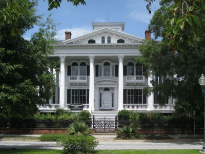
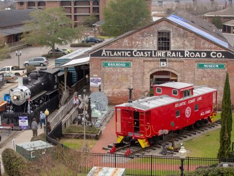
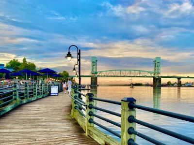
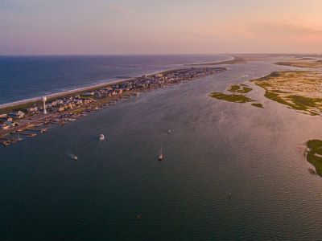

Historic port city with a revitalized riverfront boardwalk, World War II battleship museum, and access to barrier‑island beaches and film studios.
General Information
Ranger district offices generally open weekdays, 8am–4:30pm
Overview
Wilmington is a port city on the Cape Fear River in southeastern North Carolina, about 10 miles from the Atlantic coast, and it is known for its historic downtown, its riverfront, and its beaches, such as Wrightsville Beach. It is home to the Battleship North Carolina, a World War II memorial, and has long been a film location, with "Wilmywood" studios that have hosted productions from Dawson's Creek to Iron Man 3. The city combines Southern charm with a lively arts scene and easy access to the coast.
Visitors come to Wilmington for the Riverwalk and the historic district, for the Battleship North Carolina, and for the beaches at Wrightsville Beach. They also come for the Airlie Gardens, the Bellamy Mansion, and nearby Carolina Beach, Kure Beach, and Fort Fisher.
History
Wilmington was founded in 1739 and became a major port for naval stores, such as tar and pitch, and later for cotton. During the Civil War, it was the last major Confederate port open to blockade runners, until the fall of Fort Fisher in January 1865 closed it. In 1898, a white supremacist mob overthrew the local government in the Wilmington insurrection, the only coup d'état in U.S. history, killing and driving out many Black residents. In World War II, the city was a major shipbuilding center, and the USS North Carolina was brought here in 1961 as a memorial. Film studios arrived in the 1980s and made it a major production center.
Sightseeing and Popular Landmarks
The Wilmington Riverwalk is a 1.75-mile boardwalk along the Cape Fear River, with restaurants, shops, and views of the Battleship North Carolina, a 35,000-ton ship that fought in every major naval campaign in the Pacific. The historic district has more than 200 blocks of antebellum buildings, such as the Bellamy Mansion, and Airlie Gardens has 67 acres of gardens and the Airlie Oak, which is more than 460 years old. Oakdale Cemetery is a Victorian garden cemetery.
Culture and Museums
The Cape Fear Museum of History and Science is the oldest museum in North Carolina, with exhibits on the local past, and the Wilmington Railroad Museum has locomotives and a model railroad. The Bellamy Mansion Museum shows antebellum life, and the Thalian Hall is a historic theater. Film tours show visitors the sites used in movies and TV shows, and the North Carolina Azalea Festival in April is a major event.
Parks
Wrightsville Beach is a barrier island with a wide beach and surfing, and Carolina Beach State Park has hiking and a Venus flytrap trail, a plant native to the area. Fort Fisher State Recreation Area and the North Carolina Aquarium at Fort Fisher are on the Cape Fear peninsula, and the Cape Fear River is popular for boating and fishing. Greenfield Lake Park has a cypress-lined lake with a trail.
Seasons and Weather
Wilmington has a humid subtropical climate. Summers are hot and humid, with highs in the upper 80s°F, and winters are mild, with highs in the 50s°F and almost no snow. Spring and fall are the most pleasant seasons, and hurricane season runs from June to November, with Hurricane Florence in 2018 causing record flooding.
This article uses material from Wikipedia as well as information from official tourism and institutional sources. Key references include Wilmington and Beaches, Battleship North Carolina, Airlie Gardens, Cape Fear Museum of History and Science, Visit North Carolina, and National Weather Service Wilmington. Wikipedia material is from the articles "Wilmington, North Carolina" and "Wilmington insurrection of 1898", and is available under the Creative Commons Attribution-Share-Alike License 3.0.
Featured Locations

Danksergeant15, CC BY-SA 4.0, via Wikimedia Commons; Image Size Adjusted

Airlie Gardens
Historic public garden featuring seasonal blooms, walking trails, sculptures, and a centuries-old live oak tree.
Jeff P from Berkeley, CA, USA, CC BY 2.0, via Wikimedia Commons; Image Size Adjusted
.jpg){kind=link}
Battleship North Carolina
Decommissioned World War II-era battleship preserved as a museum ship featuring restored compartments, historical exhibits, and self-guided tours.

Jeff P from Berkeley, CA, USA, CC BY 2.0, via Wikimedia Commons; Image Size Adjusted
Bellamy Mansion Museum
Restored antebellum home offering guided tours, exhibits on architecture and slavery, and a preserved urban slave quarters.
Danksergeant15, CC BY-SA 4.0, via Wikimedia Commons; Image Size Adjusted
Cape Fear Museum of History and Science
Regional museum featuring interactive exhibits on science, local history, and the environment, including a giant ground sloth skeleton and hands-on learning areas.
Danksergeant15, CC BY-SA 4.0, via Wikimedia Commons; Image Size Adjusted
Oakdale Cemetery
Historic burial ground featuring Victorian-era monuments, winding paths, and the final resting places of notable regional figures.

Jeff P from Berkeley, CA, USA, CC BY 2.0, via Wikimedia Commons; Image Size Adjusted
Wilmington Railroad Museum
Historic train depot museum featuring model railroads, restored locomotives, and exhibits on regional rail history and engineering.

Jeff P from Berkeley, CA, USA, CC BY 2.0, via Wikimedia Commons; Image Size Adjusted
Wilmington Riverwalk
Scenic pedestrian boardwalk along a historic riverfront lined with shops, restaurants, public art, and views of passing boats.

Jeff P from Berkeley, CA, USA, CC BY 2.0, via Wikimedia Commons; Image Size Adjusted
Wrightsville Beach
Barrier island beach destination known for its wide sandy shores, water sports, fishing piers, and vibrant coastal community.